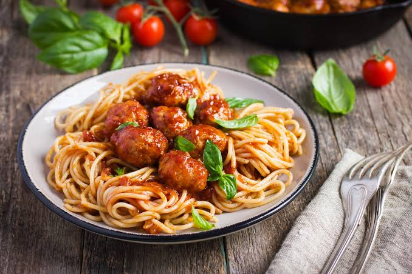

Pasta

Description
Pasta can come in different forms but my favorite is spaghetti. It is very sweet especially when cooked with fish.
I love it saucy and sweet. So here is how to cook it:
Ingredients
- Spaghetti
- Onions
- Tomatoes
- Meat / Fish
- Groundnut Oil
- Pepper
- Seasoning
- Salt
- Crayfish
- Carrots
- Green Beans
Steps
- Parboil your spaghetti.
- Wash and cook your meat/fish to taste.
- Fry your meat / fish.
- When your spaghetti is parboiled and washed, in a dry pot, put some groundnut oil.
- Add diced onions, pepper & crayfish and tomatoes.
- Keep stirring until you get a dark red colour.
- Add seasonings and bay leaves.(You can decide to add your meat to add more flavour to the meat)
- Stir for 3 minutes and add the fish / meat stock.
- Add your parboiled spaghetti and stir. If the stock is not enough, add water.
- Add salt to taste
- Allow to cook till spaghetti is done.
- Add diced carrots and green and stir.
- Let it cook for 3 minutes and then bring down your pot.
And your delicious pasta is ready to eat.